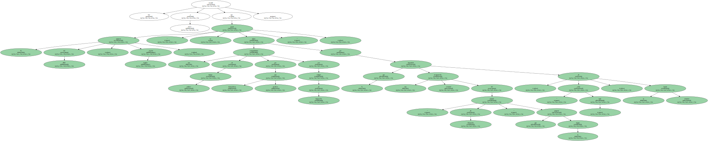
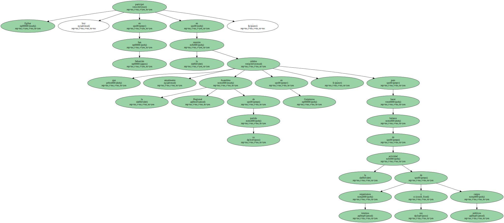
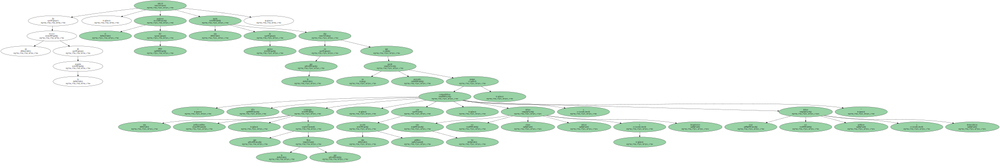
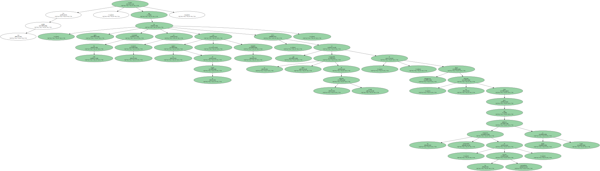
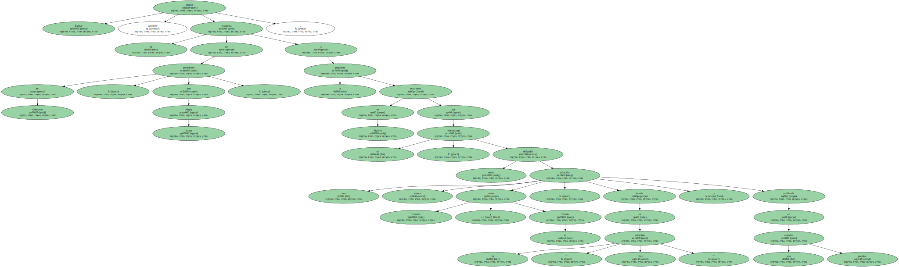
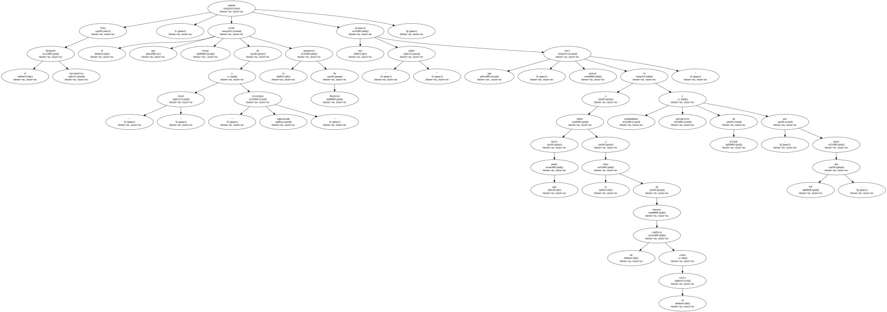
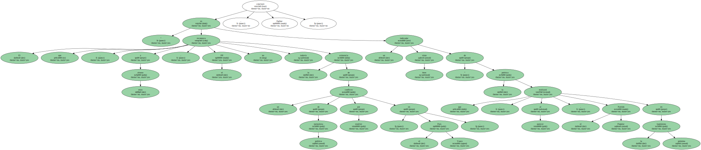

El portavoz del PNV , Joseba Egibar , recordó hoy a ETA que " no puede haber una compatibilidad de trabajo político por vías democráticas pacíficas con códigos de imposición " , por lo que una eventual recuperación del " período de distensión " que propició la tregua dependerá , " sobre todo " , de la banda terrorista.
Egibar participó hoy en San Sebastián en la reunión que anualmente celebra la Asamblea Regional de su partido en Guipúzcoa , para hacer balance de la actividad de sus organismos internos y cargos públicos.
En un receso de la reunión , el portavoz del PNV ofreció una rueda de prensa en la que dijo que " ETA no puede pretender compatibilizar una estrategia político-militar , que es la que lleva , con una acción política , porque las vías deben ser claras , únicas e inequívocas , y esas deben ser políticas y democráticas ".
En este sentido , recalcó que " quien ha irrumpido en el escenario con la ruptura de la tregua y los atentados ha sido ETA , que es la única responsable de la situación creada " , al hacer desaparecer " un elemento clave para que los esfuerzos compartidos " de las fuerzas nacionalistas " pudieran ir dando frutos ".
A este respecto , comentó que la consecución de otra tregua no depende del PNV , EH o EA , partidos que , en su opinión , son los que " más directamente están acusando los efectos " de la " no distensión " cuando han sido quienes " más han invertido " para que se produjera.

Egibar criticó también la respuesta del presidente del Gobierno , José María Aznar , a la propuesta realizada en Madrid por el lehendakari , quien defendió una nueva relación entre Euskadi y el Estado , basada en la " libre adhesión " y ratificada en una consulta popular.
Para el dirigente nacionalista , el que Aznar tache de " irreal " y " estrategia equivocada " la propuesta de Ibarretxe supone una respuesta " pobre " que hace " pensar hasta qué punto va a haber profundidad y perspectiva de Estado - por parte del PP - a la hora de encarar un conflicto como el vasco ".
Tras recalcar que PP y PSOE piensan que la sociedad vasca " no tiene derecho a decidir libre y democráticamente su futuro " , Egibar afirmó que " no parece que las posiciones de algunas formaciones políticas estén todavía maduras desde el punto de vista democrático , si no es posible ni siquiera dialogar ".

" El que , a estas alturas , el PP no reconozca todavía la existencia de un conflicto de naturaleza política por resolver - en el País Vasco - es un indicador bien triste " de la política que , al parecer , realizará el Partido Popular en la próxima legislatura , concluyó Egibar.
